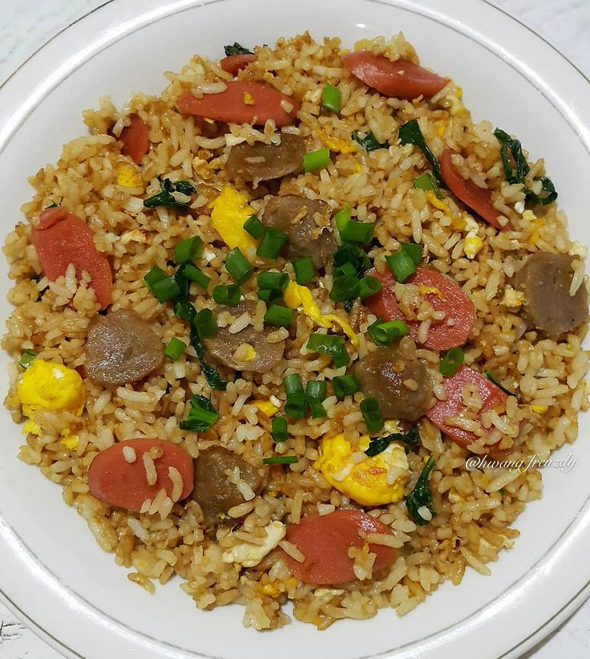

Nasi Goreng Sosis
Deskripsi
- Nasi goreng sosis adalah variasi dari hidangan nasi goreng yang populer di Indonesia, dengan tambahan sosis sebagai bahan utama. Biasanya, nasi goreng ini dibuat dengan nasi putih yang digoreng bersama bumbu-bumbu seperti bawang putih, bawang merah, kecap manis, dan rempah lainnya. Penambahan sosis memberikan rasa gurih dan tekstur yang kenyal, serta menambah kelezatan hidangan. Sosis yang digunakan biasanya dipotong kecil-kecil atau melintang agar mudah dimakan dan merata tersebar di seluruh nasi. Nasi goreng sosis sering disajikan dengan pelengkap seperti irisan mentimun, kerupuk, telur mata sapi, dan irisan daun bawang atau bawang goreng di atasnya, menciptakan perpaduan rasa gurih, manis, dan sedikit asin yang menggoda selera.
Bahan-bahan:
- 1 piring nasi putih
- 2 buah sosis, iris tipis tipis
- butir telur
- 2 sium bawang putih, cincang halus
- 3 buah cabe rawit (sesuai selera) iris tipis tipis
- minyak goreng secukupnya
- Garam dan merica secukupnya
Langkah-langkah:
- panaskan sedikit minyak goreng di wajan. masukan bawanga putih dan cabai rawit, tumis hingga harum
- masukan irisan osis, masak hingga matang, sisihkan sosis ke pinggir wajan.
- Masukkan telur dan orak-arik.
- Tambah nasi dan aduk rata.
- Tambahkan kecap manis, garam, dan merica.
- Masak hingga semua bahan tercampur rata dan matang.